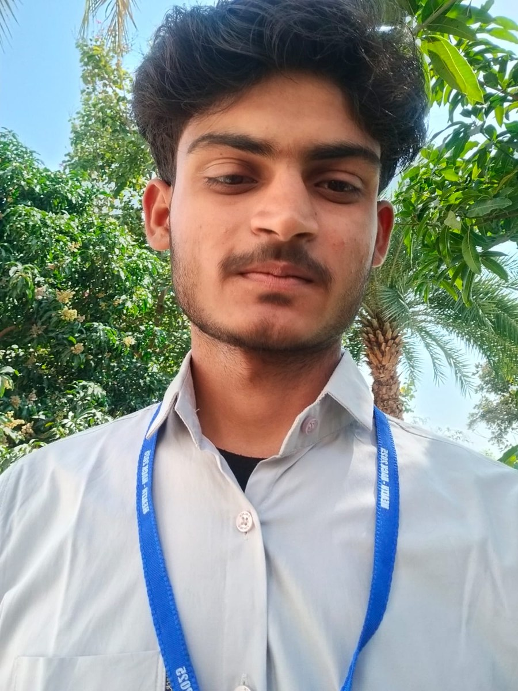

About me
My path into VLSI and the areas of digital design that motivate me.
Get to know me →Pilani, Rajasthan · VLSI Design & Technology
VLSI Design Engineer
I’m a B.Tech VLSI Design & Technology student who enjoys designing digital systems, developing RTL architectures, exploring semiconductor technologies, and building reliable hardware solutions.

Portfolio
Explore my academic background, hands-on training, technical skills, projects, and engineering community.
Selected work
Includes the projects documented in my existing portfolio and public GitHub repositories.
Resume library
Choose the version that best matches the role you’re exploring. Each PDF opens or downloads independently.
A broad profile covering VLSI design, programming, verification fundamentals, engineering tools, education, and documented projects.
Mayank_Saini_Resume.pdf
An alternate VLSI-focused version emphasizing RTL design, functional verification, simulation, and communication-protocol fundamentals.
MAYANK N.pdf
Tailored toward QA roles, pairing programming and verification experience with a stated interest in software testing and quality assurance.
Mayank_QA_Testing_Intern_Resume.pdf
A VLSI and digital-design profile featuring CPU and CMOS projects alongside IEEE event leadership and technical mentoring experience.
VLSI frontend developer.pdf